DUMP / Guides
Guides & ideasEverything about photo dumps.
How to pick the photos, post them, size them and keep them sharp, plus routines for weekly, travel and year-in-review dumps, and captions you can copy. Written by Gül Eda Aydemir, the indie developer who built DUMP. Every guide is dated and lists its sources.
12 guides · 7 idea pages · Last updated · Posting for an audience? See DUMP for creators.
Start here: picking and posting
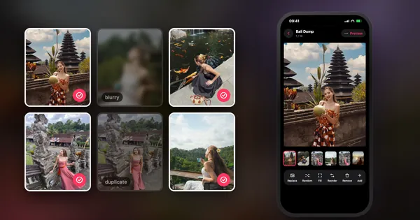
PickingHow to pick photos for a photo dump
Six rules for the cover, order, mix and length, a 10-slot template and a checklist.
9 min read · Updated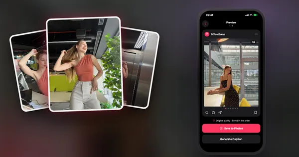
InstagramHow to post a photo dump on Instagram
Ordering, protecting quality and the exact posting steps, with 2026's carousel limits.
8 min read · Updated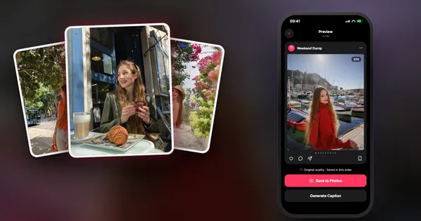
BasicsWhat is a photo dump, and why does everyone post them?
Where the format came from, what makes a good one, and how many photos to include.
7 min read · UpdatedHabits, trips and seasons
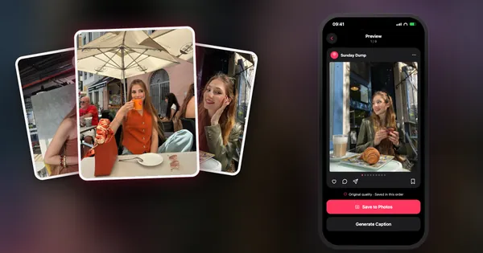
HabitThe Sunday Dump: post every week without burning out
A weekly series in a ten-minute time box, with caption formulas and a draft that builds itself.
7 min read · Updated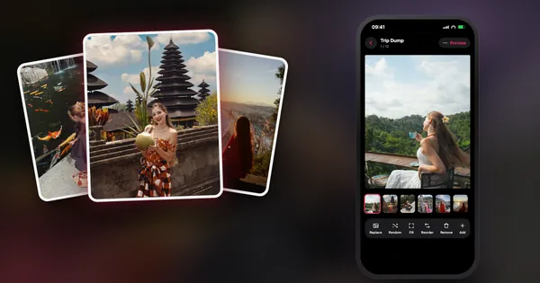
TravelHow to make a travel photo dump
The 10-slide travel formula, one dump or one per city, and automatic trip detection.
6 min read · Updated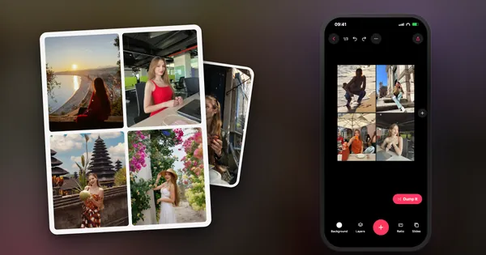
SeasonalYear in review photo dump: your 2026 in one post
The 12 + 5 formula, carousel vs Reel, and a first draft without scrolling 12 months.
5 min read · Updated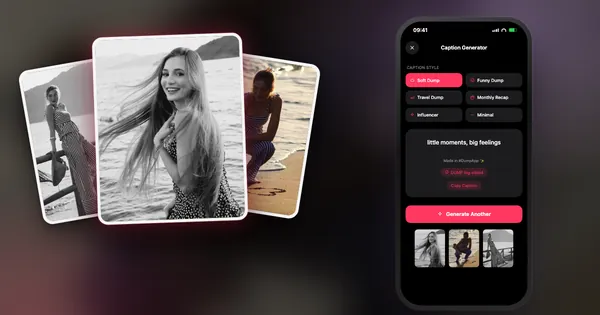
Themes40 photo dump themes and caption formulas
Themes, sequences and caption formulas for when you have the photos but no concept.
7 min read · UpdatedSizes, quality and layouts
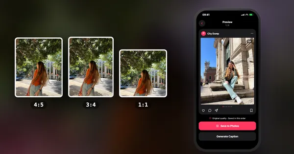
SizesInstagram carousel size guide
4:5, 3:4, 1:1 and 1.91:1 in pixels, the grid crop, and why slide one decides the rest.
8 min read · Updated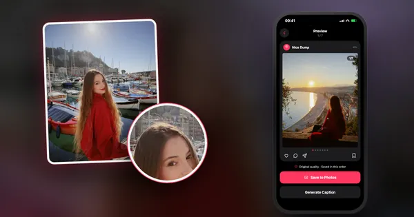
QualityWhy Instagram ruins your photo quality
What happens to your photo on upload, and the changes that make a visible difference.
7 min read · Updated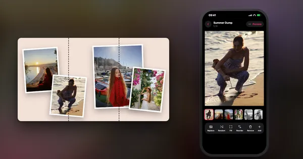
AdvancedHow to make a seamless panoramic carousel
The post that swipes across slides as one image: slicing, sizes and alignment.
8 min read · Updated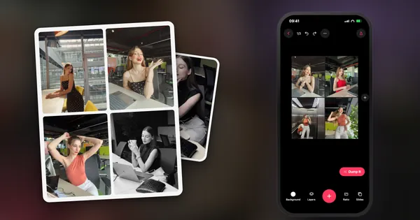
iPhoneHow to make a photo collage on iPhone
Every method, from Shortcuts to apps, with the trade-offs nobody mentions.
7 min read · UpdatedIdeas to copy
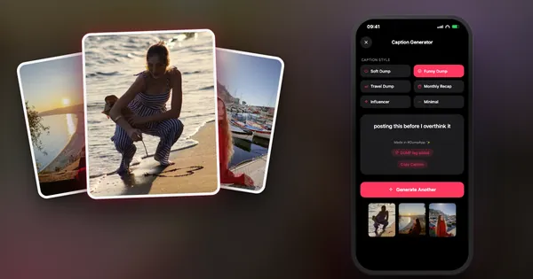
Captions100 photo dump captions
Short, funny, travel, monthly, birthday and Turkish-English lines, each with a Copy button.
5 min read ·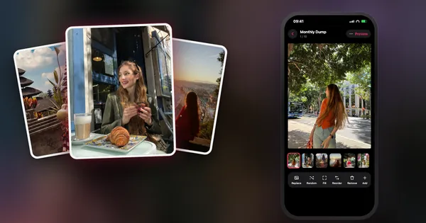
Ideas40 photo dump ideas for Instagram
What to put in a weekly, monthly, travel, summer and year-recap dump, plus slide order tips.
5 min read ·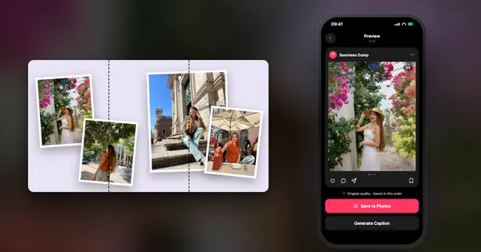
CarouselSeamless Instagram carousel ideas
15 panorama, collage and hybrid layouts, each with a diagram of where the slides cut.
5 min read ·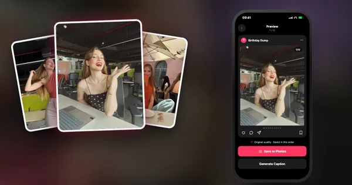
Birthday30 birthday photo dump ideas
What to shoot before, during and after the party, plus ideas for a quiet birthday.
4 min read ·Christmas and New Year
Or just let the app do it.
DUMP picks your sharpest shots on your iPhone, orders and previews the dump, then saves it to a new Photos album in sequence, with your originals untouched.
 On a computer?Scan with your iPhone camera
On a computer?Scan with your iPhone camera
Free · iPhone & iPad · No account · Works offline
Türkçe rehberler
Türkçe okumayı mı tercih edersin? Photo dump nasıl yapılır? · Instagram kaydırmalı post · Kaydırmalı birleşik post · DUMP Türkçe
More from the same developer
Guides that pair well with photo dumps: cleaning your iPhone photo library (Solo.Swipe), the creator toolkit and how to organize your life.